累積多項橫跨不同領域的設計專案，包括傳產品牌識別、議題型 NPO 視覺系統、時尚秀視覺語彙、文化機構活動主視覺，以及社區與校園實地專案。 每一個專案，都是針對不同情境、限制與需求所發展出的量身設計回應。
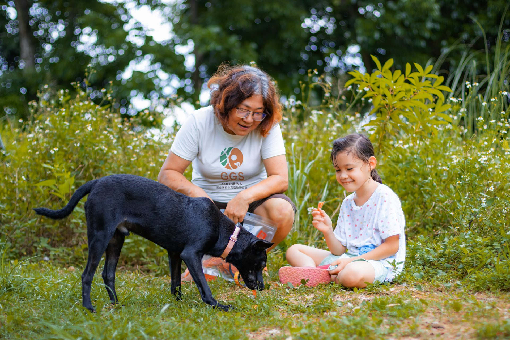
把流浪犬議題從「同情」轉為「相處」。
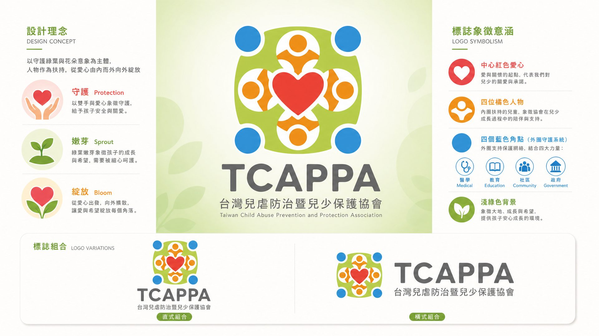
敏感議題的設計挑戰是「想看」。識別語言收斂在溫度與節制之間。
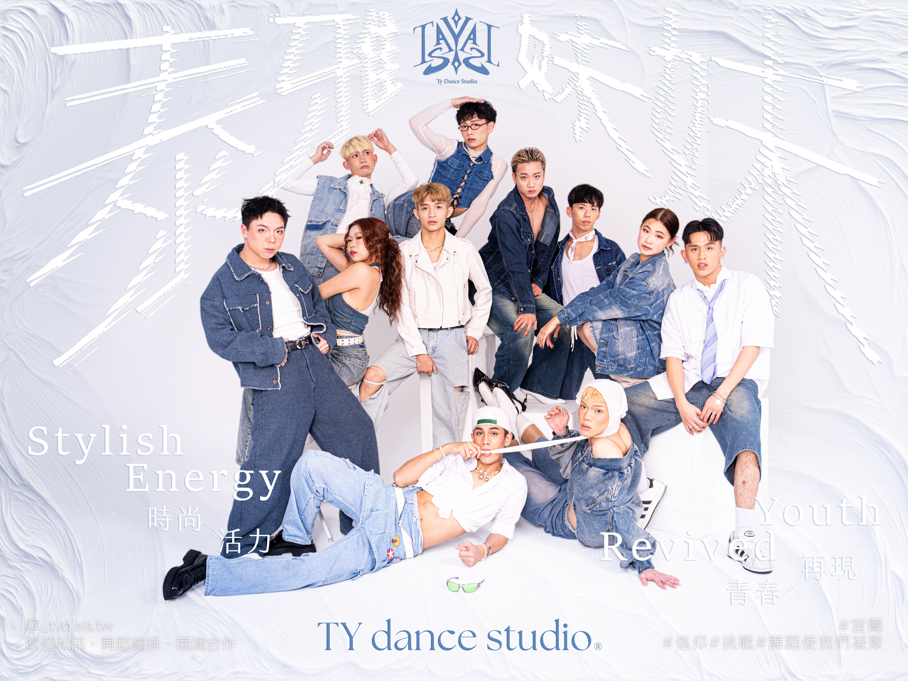
把泰雅族織紋系統化，轉譯成舞團真正能拿出去使用的形象識別。
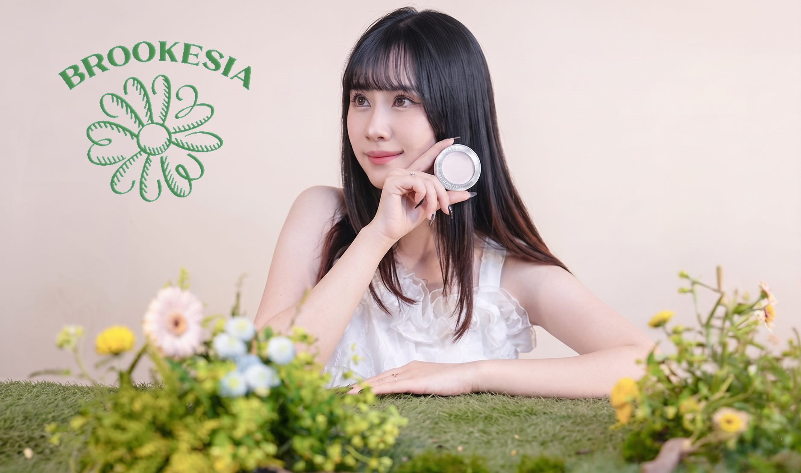
從品牌視覺規劃到產品拍攝，把美妝產品的質感一次說清楚。
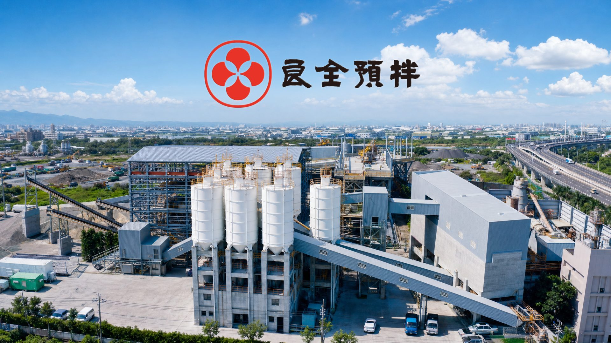
把累積二十年的家族品牌識別，重新收斂成一套精確、站得住的系統。
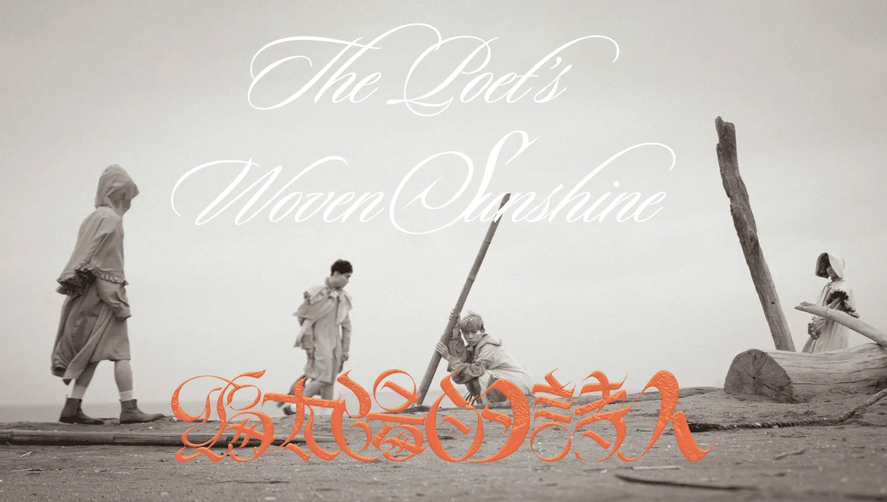
把文學語彙轉譯為視覺秩序——服裝、海報、燈光，每一段都對應原詩節奏。
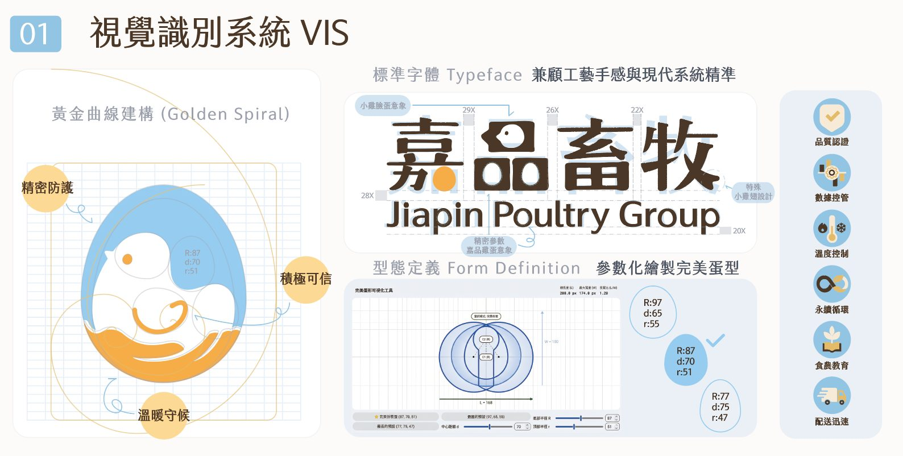
三代三十年的家族孵化場，從沒有招牌到擁有半開放式場域策略與雙軌品牌語言。

把許育璿的視覺語言從「熱血」轉為「可被信任」。

用低彩度與柔軟的字體，把寢具的「夜晚感」做成可被陳列的氛圍。

六年的長期委託，主題年年不同，但徽章位置、年份級數與配色邏輯始終沒有換過。

用節奏感的版型，把活動主軸帶入一系列延伸物。

把設計現場的策展邏輯搬上線上，用主視覺串連整個瀏覽動線。
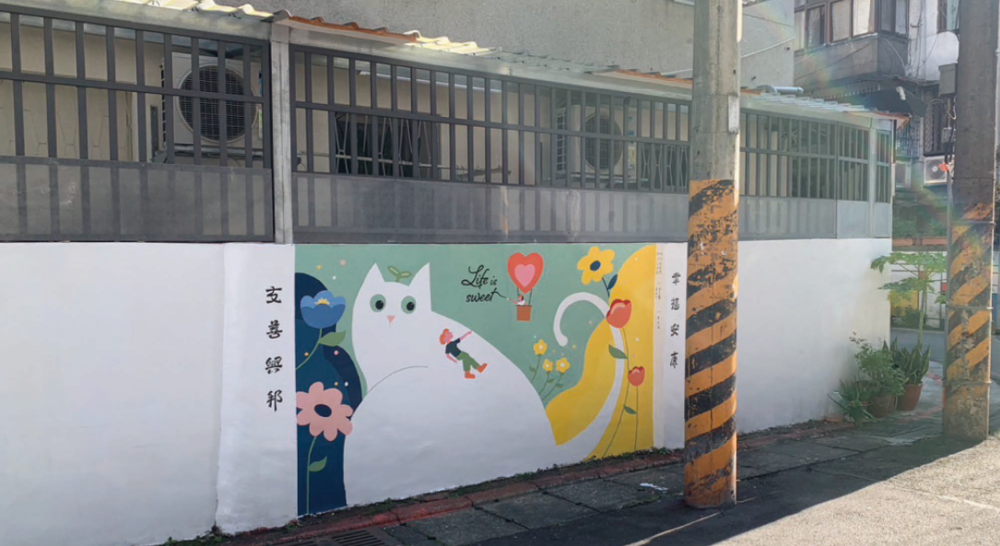
把公共議題的訊息，做成居民會願意停下來看的社區牆面視覺。

不是練手感，是練判斷。每張海報都是一個微型決策。

從一道光出發，重新追問色彩與形式能傳達多少。

中文字的負空間設計實驗。

公會型組織的識別不需要炫技，需要會員一眼認得、外部一眼信任。
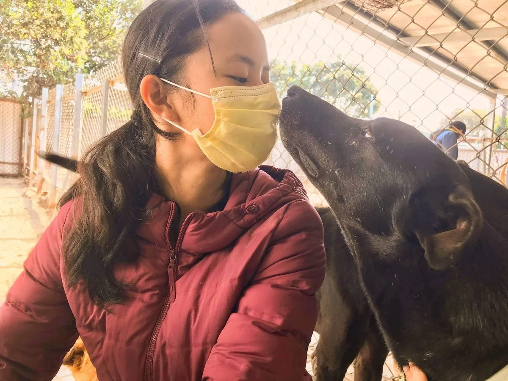
輔導台中女中學生為狗狗山動物友善協會設計募資主視覺與義賣品——讓設計成為真實的行動力。

提案賽的核心是說服力——標誌、主視覺、周邊延伸要在第一眼站得住。
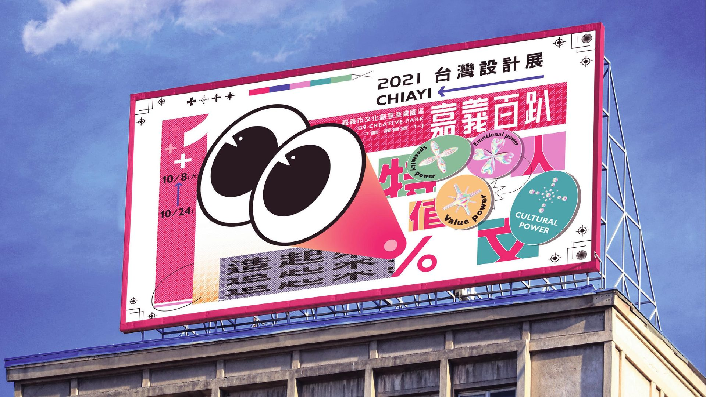
把城市性格濃縮成一套可展開的主視覺與展區角色插畫。

青銀互動不是噱頭，是讓兩代人在同一個任務裡找到對話的理由。

社區活動的主視覺，要在電線桿與公告欄之間依然被看見。
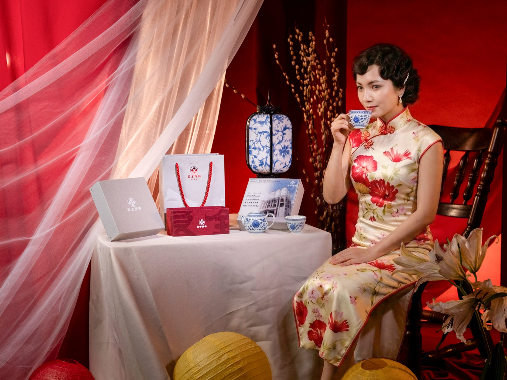
把傳產品牌的識別語彙，延伸進一套每年固定推出的送禮提案。

把兩種傳統偶戲的語言，收進一套給孩子們看的夏令營主視覺。
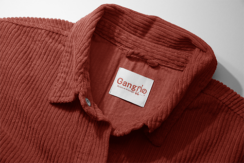
復古不是懷舊濾鏡，是把年代感做成一套可以反覆使用的視覺語法。

從《尋找薛丁格的貓》插畫大賽到 City Cafe 牛年咖啡杯，插畫創作的集合。

鏡頭是另一種版面練習——看光、看構圖、看什麼值得被留下。